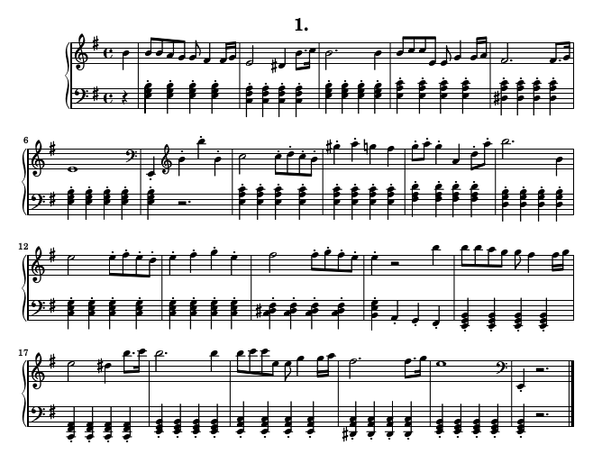
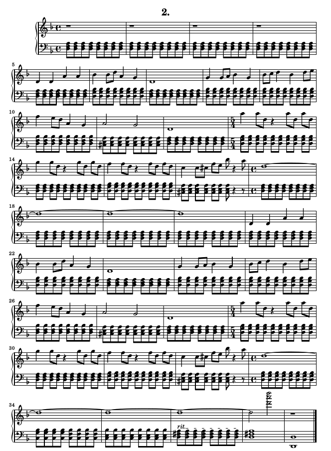
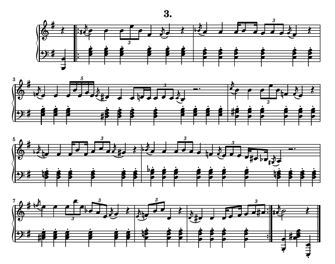

First piece is a very simple tango. One may consider playing the second theme a bit faster than the first one.
Second piece, while not really a folk song, tries to capture the feeling of a Slovak folk song as I remember it from childhood when singing was still a valid entertainment for the evening. Use pedal a lot.
Third one is harder to classify. It's kind of inspired by the influence that middle eastern music had on eastern European folk music, but I wouldn't like to argue about that point with a professional musicologist. It could be also nice if played by a string instrument such as violin or violoncello. Play it slowly.
Enjoy!



April 26th, 2016